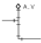
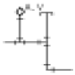
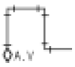
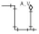

에너지관리기능사 (2005-04-03 기출문제)
1과목: 임의 구분
1. 보일러 관련 계산식 중 잘못된 것은?
- 증발계수 = (발생증기의 엔탈피 - 급수의 엔탈피) / 539
- 보일러 마력 = 실제증발량 / 539
- 보일러 효율 = 연소효율 × 전열효율
- 화격자 연소율 = 매시간 석탄 소비량 / 화격자 면적
(정답률: 55%)

2. 보일러 급수장치인 인젝터의 기능이 떨어지는 경우는?
- 급수의 온도가 너무 높을 때
- 인젝터 본체가 냉각되어 있을 때
- 증기의 건조도가 너무 높을 때
- 증기의 온도가 너무 높을 때
(정답률: 44%)
3. 100 ℃의 물 15 kg 을 같은 온도의 증기로 변화시키는데 필요한 열량은?
- 15 kcal
- 100 kcal
- 1500 kcal
- 8085 kcal
(정답률: 40%)
4. 보일러의 열손실에 해당되는 것은?
- 연료의 완전연소에 의한 손실 열량
- 과잉공기에 의한 손실 열량
- 보일러 전열면에 전달된 열량
- 연료의 현열에 의한 손실 열량
(정답률: 54%)
5. 대기압 750 mmHg 하에서 계기압력이 3.3 kg/cm2 이라면, 절대압력으로는 약 몇 kg/cm2 인가?
- 2.3 kg/cm2
- 4.3 kg/cm2
- 5.3 kg/cm2
- 1.02 kg/cm2
(정답률: 54%)
6. 화염에서 발생하는 적외선을 이용하여 화염을 검출하는 것은?
- 플레임 로드
- 스택 스위치
- 플레임 아이
- 아쿠아스태트
(정답률: 70%)
7. 보일러 부속장치를 연소실에서 가까운 것부터 나열한 것은?
- 절탄기 - 과열기 - 공기예열기
- 공기예열기 - 절탄기 - 과열기
- 과열기 - 공기예열기 - 절탄기
- 과열기 - 절탄기 - 공기예열기
(정답률: 59%)
8. 보일러 부속장치의 분류와 그 종류가 잘못 연결된 것은?
- 송기장치 - 주증기밸브, 스팀 헤더
- 급수장치 - 비수방지관, 유수분리기
- 안전장치 - 안전밸브, 고 · 저수위 경보장치
- 열효율 증대장치 - 절탄기, 공기예열기
(정답률: 72%)
9. 보일러의 기수분리기를 옳게 설명한 것은?
- 보일러에서 발생한 증기 중에 포함되어 있는 수분을 제거하는 장치
- 증기 사용처에서 증기 사용 후 물과 증기를 분리하는 장치
- 보일러에 투입되는 연소용 공기 중의 수분을 제거하는 장치
- 보일러 급수 중에 포함되어 있는 공기를 제거하는 장치
(정답률: 78%)
10. 액화석유가스에 대한 설명으로 잘못된 것은?
- 비중이 공기보다 무거우므로 누설하면 밑부분에 정체한다.
- 용기의 전락 또는 충격을 피해야 한다.
- 단위 체적당 발열량이 도시가스보다 작다.
- 그늘진 곳에 저장하고 공기의 유통을 좋게 해야 한다
(정답률: 78%)
11. 전기식 집진장치에 해당되는 것은?
- 스크루버 집진기
- 백 필터 집진기
- 사이클론 집진기
- 코트렐 집진기
(정답률: 65%)
12. 보일러의 열정산 목적이 아닌 것은?
- 보일러의 성능 개선 자료를 얻을 수 있다.
- 열 이용 상태를 밝힐 수 있다.
- 연소실의 구조를 알 수 있다.
- 보일러 효율을 알 수 있다.
(정답률: 85%)
13. 다음 액체연료 중 탄수소비가 가장 큰 것은?
- 휘발유
- 등유
- 경유
- 중유
(정답률: 57%)
14. 보일러 설치시공 기준상 압력계 부착시의 설명으로 잘못된 것은?
- 압력계는 얼지 않도록 해야 한다.
- 압력계와 연결된 증기관이 동관인 경우 안지름을 6.5mm 이상으로 한다.
- 증기의 온도가 210 ℃ 를 초과할 경우 황동관을 사용할 수 있다.
- 압력계와 연결된 증기관이 강관인 경우 안지름 12.7mm 이상이어야 한다.
(정답률: 61%)
15. 보일러의 배기가스 중 산소성분을 분석하여 연소용 공기를 제어하는 설비는 자동제어에서 어디에 속하는가?
- F.W.C
- A.B.C
- A.C.C
- A.F.C
(정답률: 74%)
16. 수관보일러의 특징 설명으로 잘못된 것은?
- 고압이기 때문에 급수의 수질에 영향을 받지 않는다.
- 보일러 파열시에 피해가 비교적 적다.
- 고온, 고압의 대용량 보일러로 적합하다.
- 효율이 비교적 높다.
(정답률: 68%)
17. 서모스타트(thermostat)의 특수 합금관을 사용하여 수위를 제어하는 방식은?
- 플로트식
- 전극식
- 차압식
- 열팽창식
(정답률: 41%)
18. 보일러 증발계수를 옳게 설명한 것은?
- 실제증발량을 539로 나눈 값이다.
- 상당증발량을 실제증발량으로 나눈 값이다.
- 상당증발량을 539로 나눈 값이다.
- 실제증발량을 상당증발량으로 나눈 값이다.
(정답률: 33%)
19. 액체 연료 연소장치인 회전식 버너, 기류식 버너 등에서 1차 공기란?
- 미연가스를 연소시키기 위한 공기
- 자연 통풍으로 흡입되는 공기
- 연료의 무화에 필요한 공기
- 무화된 연료의 연소에 필요한 공기
(정답률: 49%)
20. 펌프의 공동현상(캐비테이션)이 발생할 때의 설명으로 잘못된 것은?
- 양정이 상승한다.
- 부식이 발생한다.
- 운전불능이 되기도 한다.
- 소음, 진동이 발생한다.
(정답률: 58%)
2과목: 임의 구분
21. 보일러 연도 및 연돌의 구조로서 적합하지 않은 것은?
- 청소를 쉽게 할 수 있는 구조
- 열량을 많이 흡수할 수 있는 구조
- 점검을 용이하게 할 수 있는 구조
- 건축물을 관통하는 부분 등은 확실한 절연 재료를 사용한 구조
(정답률: 59%)
22. 기체연료의 종류 중 LNG는?
- 액화석유가스
- 발생로가스
- 액화천연가스
- 석탄가스
(정답률: 83%)
23. 연소용 버너 중 2중관으로 구성되어 중심부에서는 유류가 분사되고 외측에는 가스가 분사되는 형태로 유류와 가스를 동시에 연소시킬 수 있는 버너는?
- 통형(Center Fire형) 가스버너
- 링형(Ring형) 가스버너
- 다분기관형(Multi-Spot형) 가스버너
- 스크롤형(Scroll형) 가스버너
(정답률: 31%)
24. 보일러 급수내관에 대한 설명으로 틀린 것은?
- 열응력 팽창에 대한 관의 신축작용을 방지한다.
- 급수를 산포시켜 보일러 동체의 부동팽창을 방지한다.
- 급수가 급수내관을 통과하면서 예열된다.
- 안전저수위의 약 50 mm 정도 아래 위치에 설치한다.
(정답률: 31%)
25. 열의 일당량 값으로 옳은 것은?
- 427 kg · m / kcal
- 327 kg · m / kcal
- 273 kg · m / kcal
- 472 kg · m / kcal
(정답률: 70%)
26. 다음 스테이(Stay)중 보일러의 동판과 경판을 연결하여 보강하는 것은?
- 경사 스테이
- 스테이 볼트
- 관 스테이
- 도그 스테이
(정답률: 41%)
27. 보일러 설비에 부착된 압력계에서 측정한 압력은?
- 절대압
- 계기압
- 차압
- 부압
(정답률: 55%)
28. 자동연소 보일러에서 가장 중요한 운전관리 사항은?
- 운휴 때 점검
- 운전 중 운전상태 점검
- 연료장치 점검
- 운전 중지시 점검
(정답률: 62%)
29. 증기보일러에는 원칙적으로 2개 이상의 안전밸브를 부착해야 되는 데 전열면적이 몇 m2 이하이면 안전밸브를 1개 이상 부착해도 되는가?
- 50 m2
- 30 m2
- 80 m2
- 100 m2
(정답률: 87%)
30. 온수의 사용온도가 120 ℃ 이상인 온수발생 강철제보일러에는 온수 온도가 최고사용온도를 초과하지 않도록 무엇을 설치해야 하는가?
- 온도-연소 제어장치
- 압력조절기
- 공기유량 자동조절기
- 안전장치
(정답률: 70%)
31. 보일러의 화학 세관과 관계가 없는 것은?
- 염산
- 억제제
- 촉진제
- 슈트 블로워
(정답률: 82%)
32. 방열관으로 사용되는 관을 열전도율이 좋은 것부터 차례로 나열한 것은?
- 폴리에틸렌관 - 강관 - 동관
- 강관 - 폴리에틸렌관 - 동관
- 동관 - 폴리에틸렌관 - 강관
- 동관 - 강관 - 폴리에틸렌관
(정답률: 55%)
33. 온수보일러에서 팽창탱크의 역할과 가장 거리가 먼 것은?
- 보일러 및 배관내의 부족한 물을 공급한다.
- 보일러 내면의 스케일 부착을 방지한다.
- 안전밸브의 역할을 한다.
- 물의 온도 상승에 따른 체적 팽창을 흡수한다.
(정답률: 58%)
34. 보일러실 내에 연료를 저장하는 경우, 방화격벽을 설치하거나, 보일러 외측으로부터 몇 m 이상 거리를 두어야 하는가?
- 1m
- 1.5 m
- 1.8 m
- 2 m
(정답률: 50%)
35. 보일러를 옥내에 설치할 때의 설치 시공 기준 설명으로 틀린 것은?
- 보일러에 설치된 계기들을 육안으로 관찰하는데 지장이 없도록 충분한 조명시설을 한다.
- 보일러 동체에서 벽까지의 거리는 0.6m 이상으로 하고, 소형보일러는 0.3m 이상으로 한다.
- 보일러실은 충분한 급기구 및 환기구가 있어야 하며, 급기구는 보일러 배기가스 닥트의 유효 단면적 이상으로 한다.
- 소형보일러 및 주철제 보일러는 보일러 동체 최상부로부터 천장, 배관 등 상부 구조물까지의 거리를 0.6m 이상으로 한다.
(정답률: 49%)
36. 보일러 분출작업 시의 주의사항으로 틀린 것은?
- 분출작업이 끝날 때까지 다른 작업을 하지 않는다.
- 분출작업은 2대의 보일러를 동시에 행하지 않는다.
- 분출작업 종료 후는 분출밸브를 확실히 닫고 누수를 확인한다.
- 분출작업은 가급적 보일러 부하가 클 때 행한다.
(정답률: 89%)
37. 보일러 비상정지 시 1차적으로 연료의 공급을 차단한 다음 어떤 조치를 해야 하는가?
- 급수를 실시한다.
- 연소용 공기의 공급을 중단한다.
- 주증기밸브를 닫는다.
- 포스트 퍼지를 행한다.
(정답률: 83%)
38. 보일러 운전 중 프라이밍(priming)이 발생하는 경우는?
- 보일러 증기압력이 낮을 때
- 보일러수가 농축되지 않았을 때
- 과부하로 운전하면서 수위가 고수위인 때
- 급격히 급수를 공급했을 때
(정답률: 56%)
39. 보일러 역화(back fire)의 원인에 해당되지 않는 것은?
- 댐퍼를 너무 조인 경우나 흡인통풍이 부족할 경우
- 점화할 때 착화가 늦어졌을 경우
- 공기보다 먼저 연료를 공급했을 경우
- 노내가 부압(負壓)일 경우
(정답률: 62%)
40. 다음 중 작업안전 도구가 아닌 것은?
- 안전모
- 다이아프램
- 귀마개
- 마스크
(정답률: 80%)
3과목: 임의 구분
41. 보일러 동 내부의 스케일 부착방지 대책과 관계가 먼 것은?
- 전 처리된 용수를 사용한다.
- 응축수는 보일러수로 재사용하지 않는다.
- 청관제를 적절히 사용한다.
- 관수 분출작업을 적절한 주기로 행한다.
(정답률: 54%)
42. 보일러의 손상에서 팽출(膨出)을 옳게 설명한 것은?
- 보일러의 본체가 화염에 과열되어 외부로 불룩하게 튀어나오는 현상
- 노통이나 화실이 외측의 압력에 의해 눌려 쭈그러져 찢어지는 현상
- 강판에 가스가 포함된 것이 화염의 접촉으로 양쪽으로 돌출되는 현상
- 고압보일러 드럼 이음에 주로 생기는 응력 부식 균열의 일종
(정답률: 85%)
43. 보일러 강판이나 관의 제조 시 강괴 속에 함유되어 있는 가스체 등에 의해 두 장의 층을 형성하는 결함은?
- 크랙
- 라미네이션
- 브리스터
- 노치
(정답률: 84%)
44. 20 m 의 높이에 0.⑤ m3/sec 의 물을 퍼 올리는데 필요한 펌프의 축동력은? (단, 펌프의 효율은 80 % 이다.)
- 11.23 kW
- 12.25 kW
- 13.74 kW
- 14.82 kW
(정답률: 43%)
45. 보일러 내면에 반점 모양으로 생기는 부식은?
- 일반부식
- 점식
- 구식
- 가성취하
(정답률: 83%)
46. 온수난방 설비배관에서 공기빼기 밸브(air vent valve)의 설치 위치로 가장 좋은 것은?




(정답률: 69%)
47. 온수난방의 특징을 설명한 것으로 잘못된 것은?
- 보일러 물의 온도 및 순환량을 가감함으로서 난방 온도를 조절한다.
- 온수가 쉽게 식지 않아 순환을 계속하면 야간에도 동결의 염려가 적다.
- 안전하고 취급이 용이하다.
- 실내온도의 쾌감도가 증기난방에 비하여 낮다.
(정답률: 80%)
48. 보일러 연소시 질소 산화물의 발생 원인이 되는 것은?
- 연소실의 온도가 과도하게 높다.
- 연료가 불완전연소 된다.
- 연료 중에 회분이 많다.
- 연료 중에 휘발분이 많다.
(정답률: 25%)
49. 보일러 급수 외처리 방법으로 화학적 처리 방법은?
- 여과법
- 탈기법
- 증류법
- 이온교환법
(정답률: 67%)
50. 밀폐식 팽창탱크에 설치하여야 하는 것이 아닌 것은?
- 수면계
- 압력계
- 일수관
- 도피밸브
(정답률: 37%)
51. 강철제 증기보일러 설치 시 지켜야 할 조건으로 틀린 것은?
- 기초가 약하여 내려 앉거나 갈라지지 않아야 한다.
- 강 구조물은 접지되어야 한다.
- 수관 보일러의 경우 전열면을 청소할 수 있는 구멍이 있어야 한다.
- 소형보일러인 경우 바닥에 반드시 고정시키지 않아도 된다.
(정답률: 74%)
52. 증기 보일러의 각 증기 분출구에 설치되는 밸브는?
- 안전밸브
- 스톱밸브
- 방출밸브
- 첵 밸브
(정답률: 16%)
53. 자동 가동되는 보일러에 사용처가 2개 이상이고 그 중 한곳은 연속 사용이 아닌 단속사용으로 공급 압력이 매우 중요하여 성능이 좋은 감압 밸브를 설치하여 사용하였다. 보일러에 미치는 영향으로 맞는 것은?
- 보일러 연소 및 부하 변동이 심하게 일어난다.
- 자동화는 이런 때를 대비한 것이므로 아무런 문제가 없다.
- 감압 밸브의 용량 성능에 따라 결과가 다르다.
- 보일러 제어 장치의 성능이 얼마나 좋으냐에 따라 다르다.
(정답률: 46%)
54. 온수방열기의 입구 온수온도 92 ℃, 출구 온수온도 70 ℃, 실내 공기온도 18 ℃ 일 때의 주철제 방열기의 방열량은? (단, 실내온도와 방열기 온수의 평균온도와의 차가 62 ℃ 일 때 표준방열량이 적용된다.)
- 457 kcal/m2·h
- 498 kcal/m2·h
- 515 kcal/m2·h
- 520 kcal/m2·h
(정답률: 30%)
55. 특정열사용기자재 중 검사대상기기의 설치 또는 개조, 설치 장소 변경 등의 검사는 누가하는가?
- 시·도지사
- 산업자원부장관
- 한국열관리시공협회장
- 에너지관리공단이사장
(정답률: 38%)
56. 검사대상기기에 포함되지 않는 특정열사용기자재는?
- 강철제 보일러
- 태양열 집열기
- 주철제 보일러
- 2종 압력용기
(정답률: 52%)
57. 에너지이용합리화법상 에너지 사용자란?
- 열관리기사
- 에너지관리공단이사장
- 에너지사용시설의 소유자 또는 관리자
- 에너지를 저장, 판매하는 자
(정답률: 81%)
58. 에너지이용합리화법상 검사대상기기의 폐기신고는 언제까지 하도록 되어 있는가?
- 폐기예정일 15일전까지
- 폐기예정일 10일전까지
- 폐기한 날부터 15일이내
- 폐기한 날부터 30일이내
(정답률: 51%)
59. 1년 이하의 징역 또는 1천만원 이하의 벌금에 해당되는 자(者)는?
- 에너지사용의 제한 또는 금지에 관한 조정, 명령 기타 필요한 조치에 위반한 자
- 에너지저장시설의 보유 또는 저장의무 부과시 정당한 이유없이 이를 거부한 자
- 검사대상기기의 제조검사, 설치검사 등을 받지 아니한 자
- 효율관리기자재에 대한 에너지의 소비효율 등을 측정받지 아니 한 제조업자 또는 수입업자
(정답률: 54%)
60. 용량 10만 kcal/h 인 온수보일러를 시공하려면 제 몇 종 시공업 등록을 해야 하는가?
- 제1종
- 제2종
- 제3종
- 제4종
(정답률: 44%)